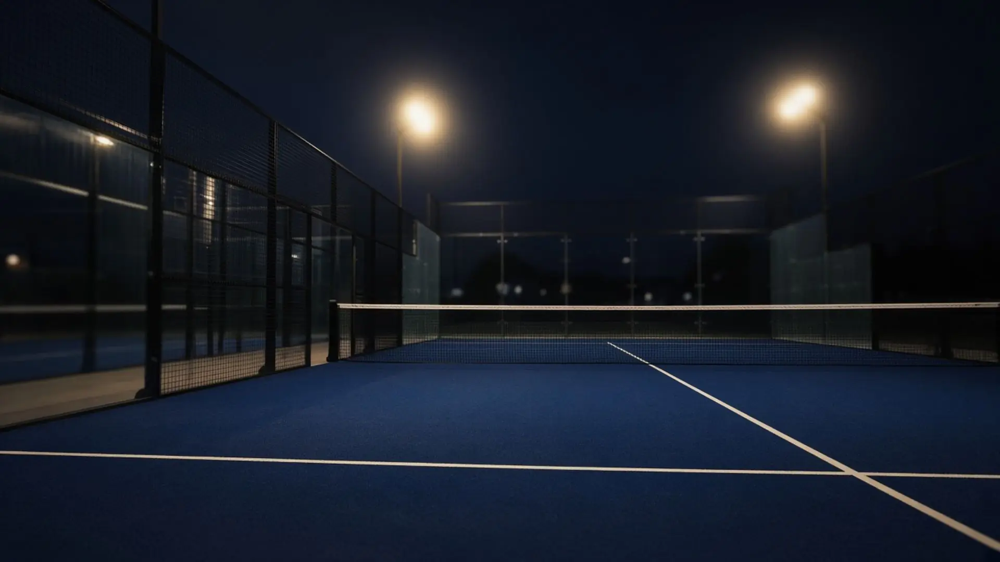

Falta uno.
Tres personas y una pista reservada. Tú eres el cuarto. Te apuntas en un toque y la conversación sigue en la app.

Padelada Club · España
El club de pádel de tu zona. Partidos de cuatro, resultados confirmados, gente de verdad.
Aquí no hay rankings comprados ni partidos inventados. Hay una pista, cuatro personas y un resultado que todos confirman. Tu comarca es tu club.
Cómo se juega aquí
Tres personas y una pista reservada. Tú eres el cuarto. Te apuntas en un toque y la conversación sigue en la app.
Un partido cuenta cuando los cuatro lo confirman. Sin trampas, sin partidos inventados. Tu nivel sale de ahí.
Opens, ligas nocturnas y duelos entre comarcas. Los organiza tu Fundador; te inscribes desde la app.
¿Desde dónde llegas?
Entra con la misma cuenta de la app y te llevamos directo a tu comarca.
Entrar →Descarga la app, elige tu comarca y juega tu primer partido. Ser miembro se gana jugando.
Cómo ser miembro →Por ahora Padelada vive en España. Pide tu país y lo abrimos contigo.
Padelada World →

Sin fronteras
Tu comarca es tu casa, no tu jaula. Apúntate a un Falta uno donde estés.
Padelada World
Espa
ña.
España — activa.
¿Tu país? Aún no.
Pero puedes pedirlo.
Sí. No hay límites: juegas en cualquier comarca y te apuntas a cualquier Falta uno.
Tu zona de juego. Un club local con sus partidos, torneos y miembros.
Desde la app: eliges comarca y juegas. El resto llega jugando.
Quien abre la comarca y la cuida al principio. Hace de capitán.
No. Se funda solo desde la app, en tu zona.